B. Diseño e implementación de las subfunciones
Tomando en cuenta las subfunciones del sistema y los componentes escogidos para el prototipo, se diseñó el circuito en un software. En el cual se muestran las conexiones eléctricas entre los opamps, las resistencias y el sensor; así como los puntos de referencia (GND) y fuentes de alimentación (VCC) para el sensor myo ware y el arduino nano, en este caso, provenientes de la batería de 9V. Una vez alimentado el circuito se realiza la medición de electromiografía, en donde la señal muscular será captada por medio de los electrodos del sensor myoware (submódulo de monitoreo), la cual podrá ser adquirida gracias al arduino nano. Los datos recibidos son enviados al software gracias al submódulo de transmisión por vía bluetooth. La señal previamente captada será amplificada gracias a los opamps para finalmente ser procesados y visualizados en una interfaz.
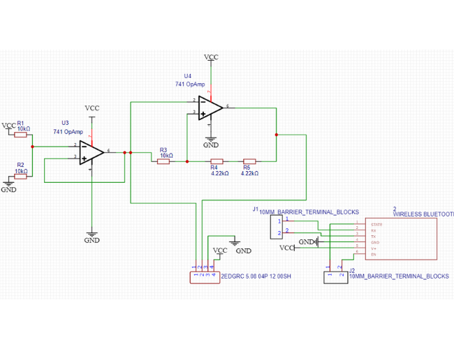
Seguidamente, se realizó la implementación y conexión del hardware siguiendo el modelo del circuito diseñado previamente. En la imagen se visualiza el protoboard donde se integró las conexiones del sistema para verificar su correcto funcionamiento. En ella se muestran los cables, las resistencias, los opamps y el sensor conectados en el mismo protoboard; así como la conexión directa entre el arduino nano y el bluetooth HC-05. No obstante, solo para el caso de prueba, la batería de 9V no se visualiza ya que fue reemplazada por la alimentación desde una laptop.
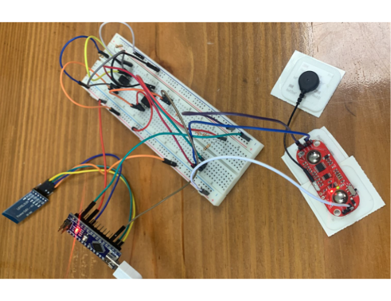
Ya teniendo el hardware implementado, se realizaron los códigos respectivos para la lectura de datos y posterior visualización en el software. Una vez obtenida la señal, se diseñó un código en el programa de Arduino para verificar si la señal recibida va acorde a lo esperado; es decir, obtener la visualización de las frecuencias a través del tiempo; así como una respectiva variación cuando se ejecute algún movimiento de la parte corporal donde se hayan colocado los electrodos, esto representado mediante la variación de picos y amplitudes en la ventana del software.
Código de arduino
Codigos
Como la lectura de la señal está en un formato de imagen, para obtener valores cuantitativos de estas señales, se diseñó un código en Python para la obtención en datos numéricos de las frecuencias captadas. Para ello, se utilizó la librería “time” para obtener un registro de las frecuencias en determinados intervalos de tiempo como 5s, 10s, 15, y 20s. Los datos recopilados fueron previamente decodificados para recopilar solo cifras numéricas y luego ser almacenados en un archivo CSV.
Código de la toma de datos (Python)
Codigos
Para visualizar mejor los datos cuantitativos, se usó la Transformada de Wavelet, ya que es un modelo matemático que brinda mejores detalles y más información sobre los valores de la señal captada. Si bien la más conocida y bastante eficiente para realizar transformaciones matemáticas es la Transformada de Fourier, existen también algunas limitaciones como la imposibilidad de determinar cuándo ocurre un determinado suceso o cuándo está presente una determinada frecuencia. Estos inconvenientes son solucionados por Wavelet, ya que el análisis se basa en descomponer la señal de frecuencias en intervalos de tiempo [37, 38, 39]. Un hecho que justamente es necesario para el estudio que se desea realizar, pues se busca conocer cada cuánto tiempo el paciente con parkinson presenta recaídas y el número de ocurrencias de la misma. De este modo, para este paso, se utilizó el software Matlab, ya que este programa cuenta con una herramienta denominada Wavelet Toolbox, en donde se puede ejecutar esta transformada y obtener gráficos que clarifican el análisis. Es así que para el código realizado en Matlab, se consideró hacer un espectrograma donde se pueda visualizar las variaciones e intensidad de frecuencia mediante niveles de colores a través del tiempo. Este espectrograma será guardado como imagen para ser enviado a la interfaz.
Código del matlab
Codigos
Asimismo, se diseñó una interfaz interactiva para que el doctor pueda visualizar los resultados de la medición de señales del paciente. Esta GUI (Interfaz gráfica de usuario) fue diseñada en Python usando la herramienta Tkinter. El diseño consta de una ventana principal con 2 opciones a realizar, una denominada “CREAR CUENTA” que dirigirá a una nueva ventana para permitir el registro del usuario con la creación de un código de usuario, contraseña y correo electrónico, como se suele utilizar; para añadir interactividad, se adiciona mensajes de texto cuando se desee realizar una determinada acción. La otra opción estará disponible siempre en cuando el usuario ya tenga una cuenta creada, por lo que, por medio del botón “LOGIN” podrá acceder a la base de datos de sus pacientes. Esta última opción abrirá una nueva ventana en donde se contará con 2 espacios. La primera, ubicada en la parte superior, donde se podrá leer y mostrar la imagen obtenida con el Matlab. Y la segunda, la sección en blanco inferior, donde se mostrará un resumen con datos cuantitativos de la señal, como el intervalo de tiempo que duró una recaída, cada qué tiempo se presentaron estos síntomas, etc. Esto por medio de los 3 botones: Cargar datos para mostrar el resumen en texto, Importar datos para almacenar en el disco y Reiniciar para actualizar la ventana.
Código de la interfaz
Codigos
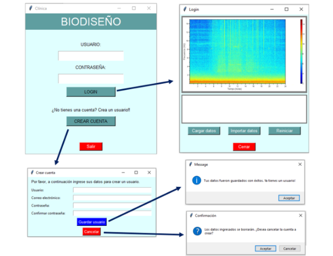
Una vez verificado que el circuito funciona correctamente y los datos se adquieren, transmiten y procesan de manera eficiente, se procedió a hacer un comprimido del sistema en una placa de circuito impreso (PCB por sus siglas en inglés), en donde se colocó de la mejor manera cada uno de los componentes usados, conectando los cables mediante borneras. Obteniendo así unas dimensiones de 100 mm x 60 mm y 4mm de espesor.
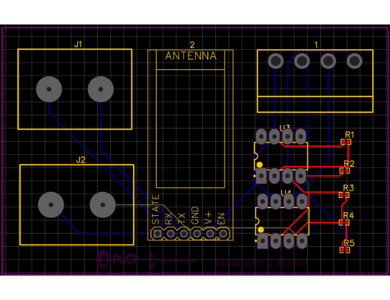

C. Experimentos enfocados de las funciones y/o experiencias críticas
La tabla nos muestra lo que le gusta, le gustaría, las preguntas y las ideas del usuario, el cual utilizó el prototipo elaborado hasta el momento. Esta es una herramienta de retroalimentación para las mejoras y cambios del prototipo.
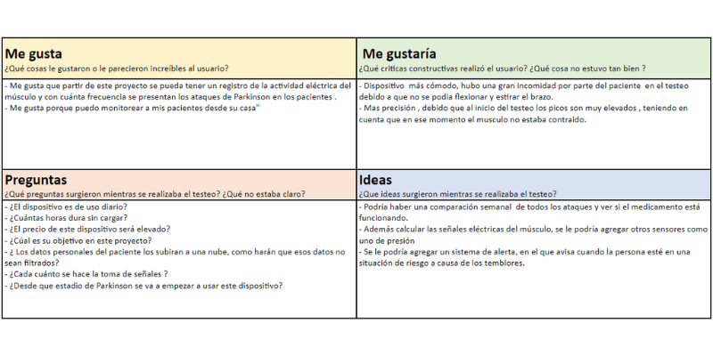
Referencias:
.
[34] “MyoWare Muscle Sensor (AT-04-001) Datasheet by SparkFun Electronics | Digi-Key Electronics,” Digikey.com, 2015. https://www.digikey.com/htmldatasheets/production/1897318/0/0/1/myoware-muscle-sensor-at-04-001-.html.
[35] “Ardu Board Nano CH340G mini-USB,” Naylamp Mechatronics - Perú, 2021. https://naylampmechatronics.com/ardusystem-tarjetas/88-arduboard-nano-ch340g-mini-usb.html.
[36] Bluetooth Module Manual.pdf, “Bluetooth Module Manual.pdf,” Google Docs, 2022.
[37] Kouro Samir et al. “Tutorial introductorio a la Teoría de Wavelet”. Técnicas modernas en automático. http://www2.elo.utfsm.cl/~elo377/documentos/Wavelet.pdf
[38] “Boundary Effects and the Cone of Influence,” Mathworks.com, 2022. https://la.mathworks.com/help/wavelet/ug/boundary-effects-and-the-cone-of-influence.html (accessed Nov. 23, 2022).
[39] “Practical Introduction to Multiresolution Analysis,” Mathworks.com, 2022. https://la.mathworks.com/help/wavelet/ug/practical-introduction-to-multiresolution-analysis.html (accessed Nov. 23, 2022).
Implementación
A. Consideraciones de diseño
Prototipamos la propuesta de solución usando las herramientas de fabricación digital y plataformas de prototipado de hardware y software.
I. Definiciones de entradas y salidas
Para nuestra solución ganadora identificamos las siguientes entradas:
Y para nuestras salidas se identificaron:
II. Definición de las subfunciones que componen el sistema
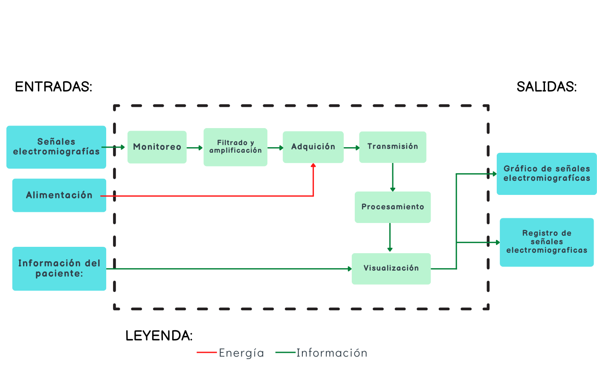III. Matriz morfológica de las subfunción
A partir de la definición de subfunciones, realizamos una matriz morfológica para escoger la opción más adecuada respecto a los materiales que se utilizarán en la realización del prototipo. A continuación se indica los modelos y ventajas de los componentes escogidos:
- Monitoreo (EMG myoware): Solo necesita 1 fuente de voltaje de 5V, sin necesidad de voltajes negativos. Los electrodos se conectan directamente a la placa, reduciendo así el tamaño y cableado necesario [34].
- Alimentación (Batería 9V): Pila eléctrica de corriente directa. Con la cual conseguiremos los voltios necesarios para el circuito.
- Adquisición (Arduino Nano): Permite un fácil diseño de circuitos. Una ventaja frente a otras es el tamaño y utiliza un microcontrolador ATmega328P [35].
- Transmisión (Bluetooth HC-05): Permite transmitir y recibir datos por vía inalámbrica. Como ya se mencionó, su ventaja respecto a otras es que trabaja como maestro y esclavo [36].
- Filtrado y amplificación: Circuito que consta de 2 opamps para obtener una señal amplificada del sensor.
- Procesamiento (MATLAB): Sistema de cómputo numérico que permitió implementar y probar algoritmos fácilmente.
- Visualización: Gráfica en Matlab, la cual nos muestra la frecuencia a través del tiempo, ideal para la observación del doctor.
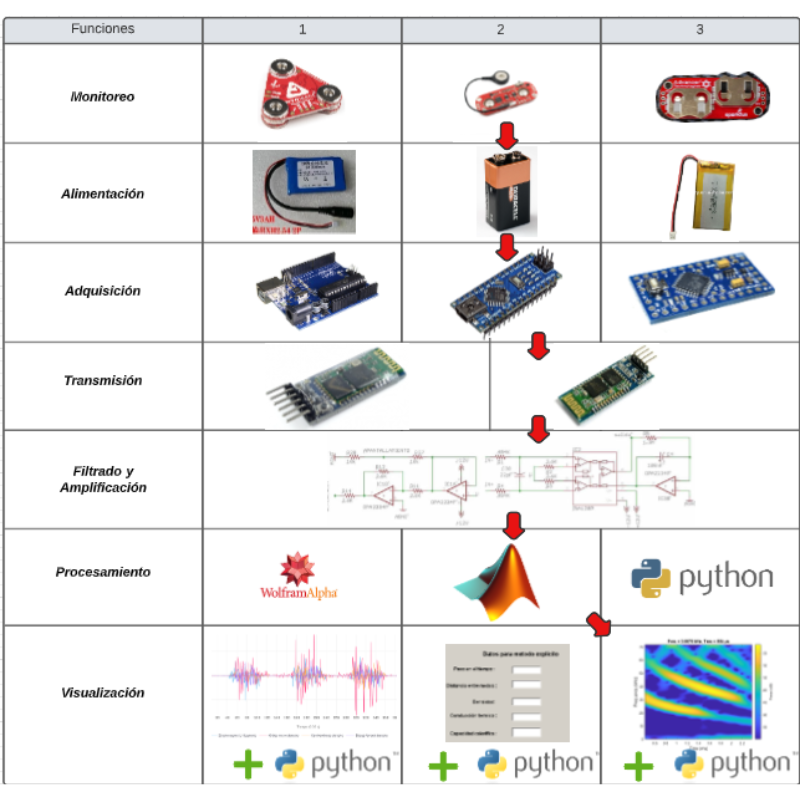B. Diseño e implementación de las subfunciones
Tomando en cuenta las subfunciones del sistema y los componentes escogidos para el prototipo, se diseñó el circuito en un software. En el cual se muestran las conexiones eléctricas entre los opamps, las resistencias y el sensor; así como los puntos de referencia (GND) y fuentes de alimentación (VCC) para el sensor myo ware y el arduino nano, en este caso, provenientes de la batería de 9V. Una vez alimentado el circuito se realiza la medición de electromiografía, en donde la señal muscular será captada por medio de los electrodos del sensor myoware (submódulo de monitoreo), la cual podrá ser adquirida gracias al arduino nano. Los datos recibidos son enviados al software gracias al submódulo de transmisión por vía bluetooth. La señal previamente captada será amplificada gracias a los opamps para finalmente ser procesados y visualizados en una interfaz.
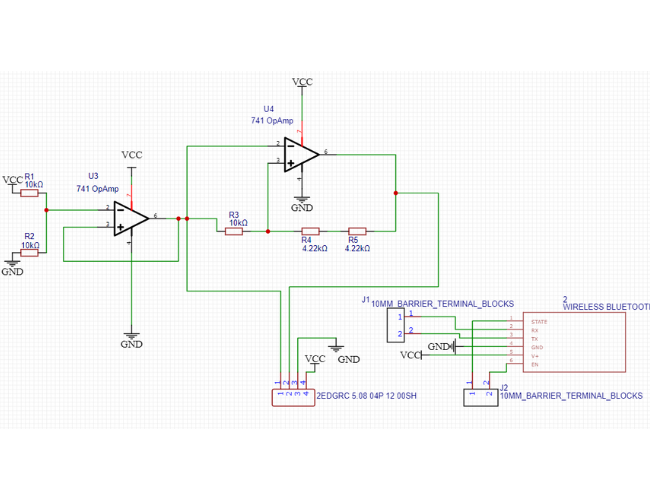Seguidamente, se realizó la implementación y conexión del hardware siguiendo el modelo del circuito diseñado previamente. En la imagen se visualiza el protoboard donde se integró las conexiones del sistema para verificar su correcto funcionamiento. En ella se muestran los cables, las resistencias, los opamps y el sensor conectados en el mismo protoboard; así como la conexión directa entre el arduino nano y el bluetooth HC-05. No obstante, solo para el caso de prueba, la batería de 9V no se visualiza ya que fue reemplazada por la alimentación desde una laptop.
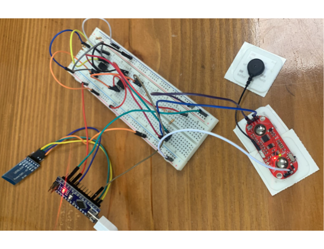Ya teniendo el hardware implementado, se realizaron los códigos respectivos para la lectura de datos y posterior visualización en el software. Una vez obtenida la señal, se diseñó un código en el programa de Arduino para verificar si la señal recibida va acorde a lo esperado; es decir, obtener la visualización de las frecuencias a través del tiempo; así como una respectiva variación cuando se ejecute algún movimiento de la parte corporal donde se hayan colocado los electrodos, esto representado mediante la variación de picos y amplitudes en la ventana del software.
Código de arduino
CodigosComo la lectura de la señal está en un formato de imagen, para obtener valores cuantitativos de estas señales, se diseñó un código en Python para la obtención en datos numéricos de las frecuencias captadas. Para ello, se utilizó la librería “time” para obtener un registro de las frecuencias en determinados intervalos de tiempo como 5s, 10s, 15, y 20s. Los datos recopilados fueron previamente decodificados para recopilar solo cifras numéricas y luego ser almacenados en un archivo CSV.
Código de la toma de datos (Python)
CodigosPara visualizar mejor los datos cuantitativos, se usó la Transformada de Wavelet, ya que es un modelo matemático que brinda mejores detalles y más información sobre los valores de la señal captada. Si bien la más conocida y bastante eficiente para realizar transformaciones matemáticas es la Transformada de Fourier, existen también algunas limitaciones como la imposibilidad de determinar cuándo ocurre un determinado suceso o cuándo está presente una determinada frecuencia. Estos inconvenientes son solucionados por Wavelet, ya que el análisis se basa en descomponer la señal de frecuencias en intervalos de tiempo [37, 38, 39]. Un hecho que justamente es necesario para el estudio que se desea realizar, pues se busca conocer cada cuánto tiempo el paciente con parkinson presenta recaídas y el número de ocurrencias de la misma. De este modo, para este paso, se utilizó el software Matlab, ya que este programa cuenta con una herramienta denominada Wavelet Toolbox, en donde se puede ejecutar esta transformada y obtener gráficos que clarifican el análisis. Es así que para el código realizado en Matlab, se consideró hacer un espectrograma donde se pueda visualizar las variaciones e intensidad de frecuencia mediante niveles de colores a través del tiempo. Este espectrograma será guardado como imagen para ser enviado a la interfaz.
Código del matlab
CodigosAsimismo, se diseñó una interfaz interactiva para que el doctor pueda visualizar los resultados de la medición de señales del paciente. Esta GUI (Interfaz gráfica de usuario) fue diseñada en Python usando la herramienta Tkinter. El diseño consta de una ventana principal con 2 opciones a realizar, una denominada “CREAR CUENTA” que dirigirá a una nueva ventana para permitir el registro del usuario con la creación de un código de usuario, contraseña y correo electrónico, como se suele utilizar; para añadir interactividad, se adiciona mensajes de texto cuando se desee realizar una determinada acción. La otra opción estará disponible siempre en cuando el usuario ya tenga una cuenta creada, por lo que, por medio del botón “LOGIN” podrá acceder a la base de datos de sus pacientes. Esta última opción abrirá una nueva ventana en donde se contará con 2 espacios. La primera, ubicada en la parte superior, donde se podrá leer y mostrar la imagen obtenida con el Matlab. Y la segunda, la sección en blanco inferior, donde se mostrará un resumen con datos cuantitativos de la señal, como el intervalo de tiempo que duró una recaída, cada qué tiempo se presentaron estos síntomas, etc. Esto por medio de los 3 botones: Cargar datos para mostrar el resumen en texto, Importar datos para almacenar en el disco y Reiniciar para actualizar la ventana.
Código de la interfaz
CodigosUna vez verificado que el circuito funciona correctamente y los datos se adquieren, transmiten y procesan de manera eficiente, se procedió a hacer un comprimido del sistema en una placa de circuito impreso (PCB por sus siglas en inglés), en donde se colocó de la mejor manera cada uno de los componentes usados, conectando los cables mediante borneras. Obteniendo así unas dimensiones de 100 mm x 60 mm y 4mm de espesor.
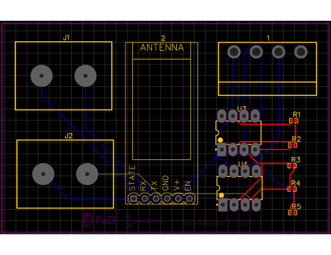C. Experimentos enfocados de las funciones y/o experiencias críticas
La tabla nos muestra lo que le gusta, le gustaría, las preguntas y las ideas del usuario, el cual utilizó el prototipo elaborado hasta el momento. Esta es una herramienta de retroalimentación para las mejoras y cambios del prototipo.
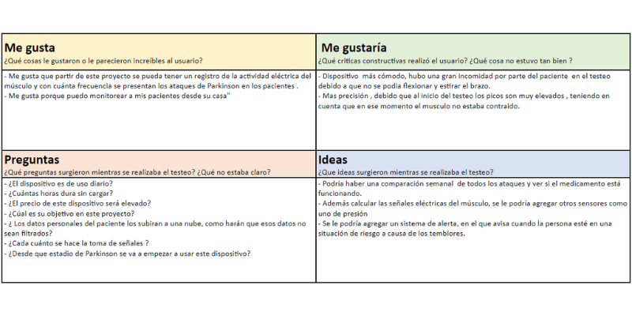Referencias:
[34] “MyoWare Muscle Sensor (AT-04-001) Datasheet by SparkFun Electronics | Digi-Key Electronics,” Digikey.com, 2015. https://www.digikey.com/htmldatasheets/production/1897318/0/0/1/myoware-muscle-sensor-at-04-001-.html.
[35] “Ardu Board Nano CH340G mini-USB,” Naylamp Mechatronics - Perú, 2021. https://naylampmechatronics.com/ardusystem-tarjetas/88-arduboard-nano-ch340g-mini-usb.html.
[36] Bluetooth Module Manual.pdf, “Bluetooth Module Manual.pdf,” Google Docs, 2022.
[37] Kouro Samir et al. “Tutorial introductorio a la Teoría de Wavelet”. Técnicas modernas en automático. http://www2.elo.utfsm.cl/~elo377/documentos/Wavelet.pdf
[38] “Boundary Effects and the Cone of Influence,” Mathworks.com, 2022. https://la.mathworks.com/help/wavelet/ug/boundary-effects-and-the-cone-of-influence.html (accessed Nov. 23, 2022).
[39] “Practical Introduction to Multiresolution Analysis,” Mathworks.com, 2022. https://la.mathworks.com/help/wavelet/ug/practical-introduction-to-multiresolution-analysis.html (accessed Nov. 23, 2022).